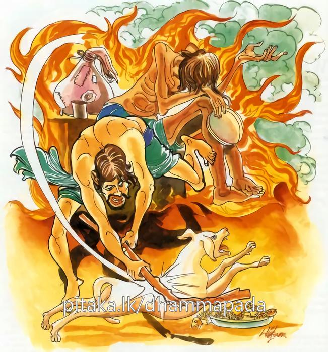
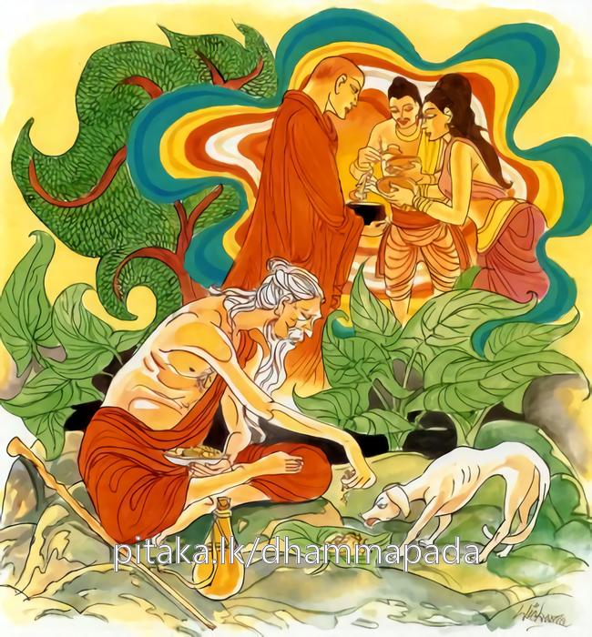

10-3 ගැරඬියකු මැරූ කුඩා දරුවෝ
මෙම කතාව ධම්මපද අටුවාවෙන් ද කියවන්න.
සුඛකාමානි භූතානි යො දණ්ඩෙන විහිංසති
අත්තනො සුඛමෙසානො පෙච්ච සො න ලභතෙ සුඛං.
යම් පුද්ගලයෙක් (අනුන් මරා තළා අනුන් ගැති කොට ගෙණ) තමහට සුව කැමැති වූයේ, කායික චෛතසික සුව කැමැති සත්ත්වයන් වාගදණ්ඩයෙන් පෙළා ද (දුකට පමුණුවා ද), හෙ තෙම පරලොව දෙව්මිනිස් සුව ද නිවන් සුව ද නො ලබන්නේ ය.

සුඛකාමානි භූතානි යො දණ්ඩෙන න හිංසති
අත්තනො සුඛමෙසානො පෙච්ච සො ලභතෙ සුඛං.
යම් පුද්ගලයෙක් තමහට සුව කැමැති වූයේ, සුව කැමැති සතුන් (වාග්දණ්ඩාදී) දණ්ඩයෙන් නො පෙළා ද (දුකට නො පමුණුවා ද), ඒ පුද්ගල තෙම පර ලොවදී සුව ලබන්නේ ය.

දිනෙක බුදුරජානන් වහන්සේ සැවැත් නුවර පිඬු සිඟා වැඩි සේක. උන්වහන්සේ ඒ වඩිනා ගමනේ දී අතර මග කොලු රැලක් ගැරඬියකු දඬුකඩකින් ගසා මරණු දැක “දරුවෙනි! නුඹලා කුමක් කරන්නහු දැ?” යි ඇසූහ. “ස්වාමීනි! අපි ගැරඬියකු මරමු” යි කී කල්හි “කුමකට මරහු දැ?” යි ඇසූහ. “ස්වාමීනි! මූ අපට දෂ්ට කරේ ය” යි කී කල්හි “ලමයිනි! නුඹලා තමන්ට සැප පතා මේ සතා මැරීමෙන් උපනූපන් තැනේ දී දුකට ම වැටෙන්නහු ය, සැප ලබන්නෝ නො වන්නහු ය, තමන්ට සැප කැමැත්තන් විසින් අනුන් නසනු යුතු නැතැ” යි වදාරා අනුසන්ධි ගළපා මේ ධර්මදේශනාව කළ සේක.
සුඛකාමානි භූතානි යො දණ්ඩෙන විහිංසති,
අත්තනො සුඛමෙසානො පෙච්ච සො න ලභතෙ සුඛං.
.
සුඛකාමානි භූතානි යො දණ්ඩෙන න හිංසති,
අත්තනො සුඛමෙසානො පෙච්ච සො ලභතෙ සුඛන්ති.
තමාට සුව කැමැති වූ යමෙක් තෙමේ (එසේ ම) සුවකැමැති වූ සත්ත්වයන් දණ්ඩනයෙන් පෙළා ද, හෙතෙමේ පරලොව සැප නො ලබයි.
තමාට සුව කැමැති වූ යමෙක් තෙමේ (එසේ ම) සුව කැමැති වූ සත්ත්වයන් දණ්ඩනයෙන් නො පෙළා ද, හෙතෙමේ පරලොව සැප ලබයි.
සුඛකාමානි භූතානි = සුව කැමැති වූ සත්ත්වයන්.
කායික - චෛතසික සුඛය, මෙහි සුඛ යි වදාරණ ලද්දේ ය.
භූත ශබ්දය ‘ භූතස්මිං පාචීත්තියං’ යන මෙහි විද්යමාන භාවයෙහි ද ‘භූතමිදන්ති භික්ඛවෙ! සමනුපස්සථ’ යන මෙහි පංචස්කන්ධයෙහි ද, ‘ චත්තාරො ඛො භික්ඛු මහාභූතානං හෙතු’ යන මෙහි පඨවිධාත්වාදී මහා භූතයන් කෙරෙහි ද, ‘යො ච කාලඝසො භූතො සභූත පචිනිං පචී’ යන මෙහි රහතුන් කෙරෙහි ද, ‘සබ්බෙව නික්ඛිපිස්සන්ති භූතා ලොකෙ සමස්සයං’ යන මෙහි සත්ත්වයන් කෙරෙහි ද, ‘භූතගාමපාතව්යතාය පාචිත්තියං’ යන මෙහි තරුලතාදියෙහි ද, ‘භූතං භූතතොසංජානාති’ යන මෙහි සිවුමහරජය පිළිබඳ යට සත්ත්ව ගණයෙහි ද, ‘යානීධ භූතානි සමා ගතානී’ යන මෙහි අමනුෂ්යයන් කෙරෙහි ද, ‘ජාතං භූතං සඞ්ඛතං’ යන මෙහි උත්පත්තියෙහි ද ආයේ ය. මෙහි අවිශේෂ ව සියලු සතුන් කෙරෙහි යෙදෙයි. ‘කම්මකිලෙසෙන භවතීති, බන්ධපාතුභාවෙන භවතීති වා = භූතො’ යනු වාක්යයි.
යො දණ්ඩෙන විහිංසති = යමෙක් දණ්ඩනයෙන් පෙළා ද.
‘යො’ යනු අනියාමිත වචනයි. අසවලා යි නියම නා කළ බැවිනි. ‘දණ්ඩෙන’ යනු දේශනාමාත්ර ය. එහෙයින් පහර දීමට සාධන වන්නා වූ හැම එකක් ම මින් ගත හැකි ය. දඬුකඩ, කැට කැබිලිති, මුගුරු, ආයුධ, අත්පා ආදීය ය ඒ. යමෙක් සැප කැමැති වූ සත්ත්වයන්ට කුලමල කියා ගැටිමෙන්, අතින් පයින් තැළීමෙන්, දඬු මුගුරුවලින් කෙටීමෙන් සිය දහස් ගණන් ධනය ඇප කොට තැබ්බවීමෙන් දුකට පමුණුවන්නේ ද, යි මෙසේත් කියැකි ය.
අත්තනො සුඛමෙසානො = තමාට සැප සොයන්නා වූ, සැප කැමැත්තා වූ.
සුඛ යි සිද්ධ කිරීමෙහි ‘සු පුබ්බ ඛනු අවදාරණෙ, සු පුබ්බ ඛාද භක්ඛණෙ, සුඛ සුඛනෙ’ යන ධාතුත්රයයෙන් එකක් ගණිත්. යම් චේතනා මාත්රයක් කය සිත දෙක ඔද වැඩි කෙරේ ද, කය සිත දෙක්හි ඔදවැඩි බවට කරුණු වූ ඒ චේතනා මාත්රය සුඛ යි ගණු ලැබේ.
එසානො යනු ‘එසන්තො ගවෙසන්තො පත්ථෙන්තො’ යි අටුවා කළහ. එහෙයින් සොයන්නේ, පතන්නේ, කැමැතිවන්නේ ‘එසන’ නම්.
පෙච්ච සො න ලභතෙ සුතං = හෙතෙමේ පරලොව සැප නො ලබයි.
තමාට සැප සොයන්නේ සැප නො සොයන්නා වූ අන්හු තළා පෙළා, හිංසා කෙරේ නම්, ඔහු පරලොව දී මිනිසුන් පිළිබඳ සැපයක් පමණකුදු නො ලබන්නේ ය. දෙව්සැප - නිවන්සැප නො ලැබිමෙහි කා කථා ද, එකාන්තයෙන් අන්හට කළ දණ්ඩනයෙන් ඔහු ලබන්නේ කටුක දුකක් ම ය.
පෙච්ච යනු භවාන්තරාර්ත්ථවාචක අව්යයකි. පරලොවැයි කීයේ එහෙයිනි.
සුබකාමානි භූතානි = සුව කැමැති වූ සත්ත්වයන්.
යො දණාඩෙන න හිංසති = යමෙක් දණ්ඩනයෙන් නො පෙළා ද.
අත්තනො සුඛමෙසානො = තමාට සැප සොයන්නා වූ. සැප පතන්නා වූ.
පෙච්ච සො ලභතෙ සුඛං = හෙතෙමේ පරලොව සැප ලබයි.
යමෙක් ක්ෂාන්ති මෛත්රී ආදී ගුණයෙන් යුක්ත ව “මම යම්සේ සැප කැමැත්තෙම් ද, දුකින් පිළිකුල් ඇත්තේ වෙම් ද ලෝ වැසි අන් සියලු දෙනාත් එසේ ය” යි සිතා සම්ප්රාප්තවිරති ආදියෙහි සිටියේ කියන ලද කිසිත් දණ්ඩනයකින් කිසිවෙකුත් නො පෙළා ද, නො තළා ද, හෙතෙමේ මනුෂ්ය වූයේ මිනිස් සැපත් දෙවි වූයේ දෙව්සැපත් ඒ දෙකම ඉක්ම වූයේ නිවන් සැපත් ලබන්නේ ය. එබඳු එකකුට ඒ සැපය අවශ්යයෙන් ලැබෙන බැවින් එය වත්මන් සැපයක් සේ වේ යි දක්වන්නට ලභතෙ යි වර්තමානකාලික ක්රියාපදය යෙදුනේ ය.
ධර්මදේශනාවගේ අවසානයෙහි ඒ බොහෝ ගණනක් කොල්ලෝ සෝවාන් වූහ.
බහුකුමාරක වස්තුව නිමි.